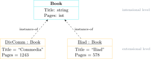

Definition
The Unified Modelling Language (Booch, Rumbaugh, Jacobson) collects diagrams of three kinds: structural (class and object diagrams), behavioural (use case, state/transition, sequence, collaboration, activity) and architectural (component, deployment).
A class is a box with three compartments: the name, the attributes name: type, the operations name(params): type, each prefixed by its visibility (+ public, - private, # protected, ~ package). An object is a box whose title id : Class is underlined; it carries a value for every attribute of its class.
- An object has its own life and an identity of its own, independent of the values of its attributes.
- An object can be an instance of several classes (a class and its superclasses), but there is always one most specific class.
- An attribute is a local property: its value does not depend on other objects. The class fixes which attributes the instances have, not their values.
Picture

One class, two objects: every object has a value for each attribute and no other attribute.
Typical errors
In an object diagram an object must name its class, carry a value for every attribute of the class, and carry no attribute that the class does not declare. An object without a class, or with an extra attribute (Language = "greek" on a Book without Language), is a wrong diagram.
Worked example
Exercise: students (name, surname, number, age) enrolled in one degree programme (code, name), who passed exams in courses (name, subject). Solution: classes Student, Programme, Course; association enrolled Student–Programme with multiplicities to ; association exam Student–Course to with association attribute grade: int (see associations). The grade is neither a property of the student nor of the course.
Intuition
The class diagram is the vocabulary of the program: which things exist, what they know, and how they are related. Code that follows a good class diagram has one class per box and one field or method per line in the box.
Pitfall
A class is not a table: two objects with the same attribute values are still two objects. Identity, not value, distinguishes them.